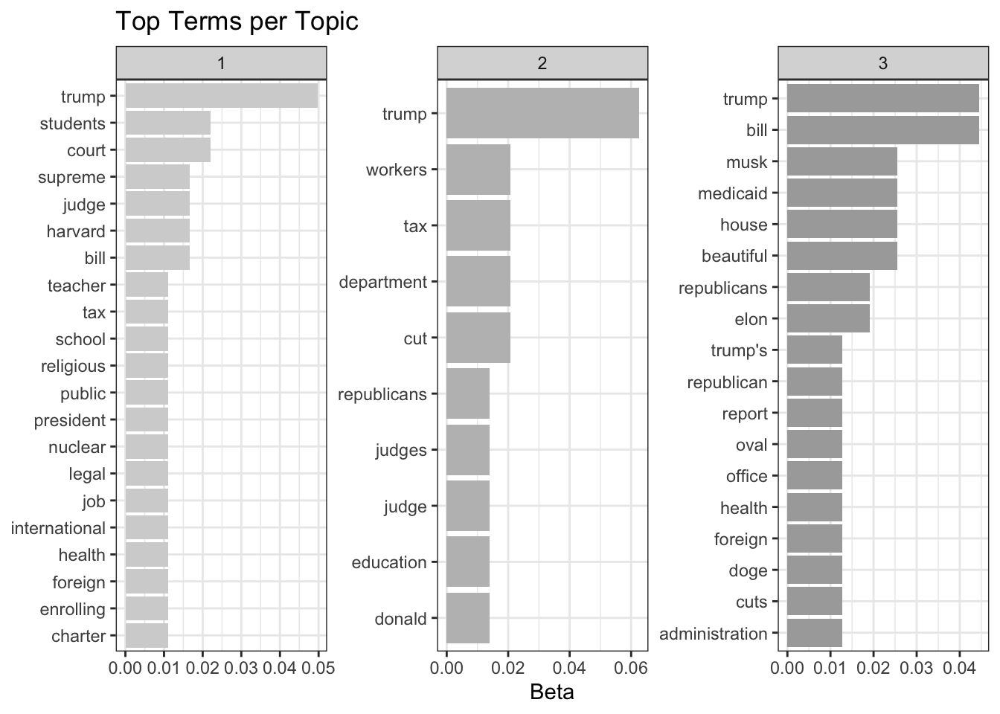

library(tidyverse)
library(knitr)
library(kableExtra)
library(RedditExtractoR)
library(tidytext)
library(topicmodels)
library(tm)
library(igraph)
library(ggraph)Exploring Political Discussions on Social Media
Introduction
In this tutorial, we will explore political discussions online using data from Reddit. We will use the Reddit API to collect posts and comments, perform basic text analysis, and visualize the network of interactions.
Prerequisites
To follow this tutorial, you need:
- An R environment set up on your computer (e.g., RStudio)
- The following R packages installed:
httr,jsonlite,tidyverse,tidytext,igraph,ggraph,redditExtractoR.
You can install these packages with:
install.packages(c("httr", "jsonlite", "tidyverse", "tidytext", "igraph", "ggraph", "RedditExtractoR", "tm))Start by loading all necessary packages
Step 1: Access the Reddit API
If you‚Äôd like to work with data from a different platform. You may have a look at the Bluesky API. The authentication process is a bit different from Reddit and implementation may take you a bit longer. ü¶ã
To access Instagram, Facebook, X or TikTok data, you currently have to go through an approval process and/or pay a considerable amount for data access. Reddit is still pretty open to research, this is why we start here.
Setting Up API Access
- Create an account on Reddit if you don’t already have one.
- Go to Reddit Apps and create a new application. Give it a name, add a brief description (select “script”). As redirect uri, you can use
http://localhost:8080. Note the client ID and secret. At this point you may also want to have a look at the following:
- Create an R script that you call
authenticate.Rand you populate with the following information:
# Replace with your client ID, secret, and username/password
client_id <- "your_client_id"
client_secret <- "your_client_secret"
username <- "your_username"
password <- "your_password"- Use the
httrpackage to authenticate and make requests. This is the standard “raw” way how to query APIs using html GET and SET requests.
# Load credentials from authenticate.R
source("authenticate.R")
# Obtain OAuth token
response <- POST("https://www.reddit.com/api/v1/access_token",
authenticate(client_id, client_secret),
body = list(grant_type = "password", username = username, password = password),
encode = "form")
token <- content(response)$access_token
headers <- add_headers(Authorization = paste("bearer", token))Fetching Data
For this tutorial, we will fetch posts and comments from the subreddit r/politics. If you inspect the output, you’ll see that content from a raw GET request looks pretty messy and requires significant parsing…
library(httr)
# Fetch recent posts from r/politics
url <- "https://oauth.reddit.com/r/politics/hot"
response <- GET(url, headers)
data <- content(response, as = "parsed", simplifyVector = TRUE)
str(data)…However, many social media APIs come with wrappers - packages built by people who make your life easier. In R, a package that simplifies working with the Reddit API is the package RedditExtractoR. If you seriously want to work with Reddit data, I’d recommend moving your data collection to Python and use PRAW.
# Find thread URLs
thread_urls <- find_thread_urls(subreddit = "politics", sort_by = "hot")
# Extract content from the first few threads
threads_content <- get_thread_content(thread_urls$url[1:10])
# Inspect the data - there are two datasets: one for the posts ($threads) and one for the comments ($comments)
str(threads_content)
posts <- threads_content$threads
#write_csv(posts, "../data/posts.csv")
comments <- threads_content$comments
#write_csv(comments, "../data/comments.csv")In case you got stuck along the way - you can work with the posts and comments I collected.
posts <- read.csv("../data/posts.csv")
comments <- read.csv("../data/comments.csv")Step 2: Basic Text Analysis
We will analyze the text content of the posts using tidytext.
# Tokenize words
words <- posts %>%
unnest_tokens(word, title) %>%
anti_join(stop_words) # Remove stopwords
# Count word frequencies
word_counts <- words %>%
count(word, sort = TRUE)
# Display top words
word_counts %>%
top_n(10, n) %>%
arrange(desc(n)) %>%
kbl(col.names = c("Word", "Frequency"), caption = "Top 10 Words in Reddit Posts")%>%
kable_styling(bootstrap_options = c("striped", "hover", "condensed"), full_width = FALSE)| Word | Frequency |
|---|---|
| trump | 25 |
| bill | 11 |
| house | 5 |
| judge | 5 |
| republicans | 5 |
| tax | 5 |
| administration | 4 |
| beautiful | 4 |
| court | 4 |
| cut | 4 |
| foreign | 4 |
| health | 4 |
| medicaid | 4 |
| musk | 4 |
| students | 4 |
## Bigram Analysis
# Tokenize the text into bigrams (pairs of consecutive words)
bigrams <- posts %>%
unnest_tokens(bigram, title, token = "ngrams", n = 2)
# Separate the bigrams into two words
bigrams_separated <- bigrams %>%
separate(bigram, into = c("word1", "word2"), sep = " ")
# Remove rows with stopwords
bigrams_filtered <- bigrams_separated %>%
filter(!word1 %in% stop_words$word,
!word2 %in% stop_words$word)
# Unite the words back into bigrams
bigrams_united <- bigrams_filtered %>%
unite(bigram, word1, word2, sep = " ")
# Count bigram frequencies
bigram_counts <- bigrams_united %>%
count(bigram, sort = TRUE)
# Visualize the top 10 bigrams
bigram_counts %>%
top_n(10, n) %>%
arrange(desc(n)) %>%
kbl(col.names = c("Bigram", "Frequency"), caption = "Top 10 Bigrams in Reddit Posts")%>%
kable_styling(bootstrap_options = c("striped", "hover", "condensed"), full_width = FALSE)| Bigram | Frequency |
|---|---|
| beautiful bill | 4 |
| elon musk | 3 |
| supreme court | 3 |
| tax bill | 3 |
| trump administration | 3 |
| bond market | 2 |
| charter school | 2 |
| donald trump | 2 |
| education department | 2 |
| foreign students | 2 |
| international students | 2 |
| medicaid cuts | 2 |
| oval office | 2 |
| public religious | 2 |
| religious charter | 2 |
Simple sentiment analysis
# Load the sentiment lexicon
bing_lexicon <- get_sentiments("bing")
# Join the unigrams with the sentiment lexicon
sentiment_analysis <- words %>%
inner_join(bing_lexicon, by = "word") %>%
count(sentiment, word, sort = TRUE)
# Visualize the top sentiment-bearing words
sentiment_analysis %>%
group_by(sentiment) %>%
slice_max(n, n = 10) %>%
ungroup() %>%
ggplot(aes(x = reorder(word, n), y = n, fill = sentiment)) +
geom_col(show.legend = FALSE) +
scale_fill_manual(values = c("pink","blue"))+
facet_wrap(~ sentiment, scales = "free_y") +
coord_flip() +
labs(title = "Top Sentiment Words in Reddit Posts", x = "Word", y = "Frequency")+
theme_bw()Hmm, how useful is this actually? Let’s try something else…
Topic Modeling with LDA
# Assign a unique identifier to each post
posts <- posts %>%
mutate(post_id = row_number())
# Tokenize and count word frequencies per post
post_words <- posts %>%
unnest_tokens(word, title) %>%
anti_join(stop_words, by = "word") %>%
count(post_id, word, sort = TRUE)
# Create the DTM (document term matrix)
dtm <- post_words %>%
cast_dtm(document = post_id, term = word, value = n)
# Set a seed for reproducibility
set.seed(123)
# Fit the LDA model
lda_model <- LDA(dtm, k = 3, control = list(seed = 123))
topics <- tidy(lda_model, matrix = "beta")
top_terms <- topics %>%
group_by(topic) %>%
top_n(10, beta) %>%
ungroup() %>%
arrange(topic, -beta)
top_terms %>%
mutate(term = reorder_within(term, beta, topic)) %>%
ggplot(aes(term, beta, fill = factor(topic))) +
geom_col(show.legend = FALSE) +
facet_wrap(~ topic, scales = "free") +
coord_flip() +
scale_x_reordered() +
scale_fill_manual(values = c("lightgrey","grey","darkgrey"))+
labs(title = "Top Terms per Topic",
x = NULL, y = "Beta")+
theme_bw()
What could these topics be? Does the result make sense to you?
These simple, out-of-the-box approaches may not answer the core questions you’re interested in. Fortunately, LLMs enable a whole new level of content analysis using approaches that get pretty close to human annotation (Gilardi et al., 2023).
Can you develop a prompt (or a set of prompts) that could help you annotate the data to answer a question you are interested in?
You may want to spend the rest of the time polishing the prompts. In case you realize that your question is rather structural or relational - you may want to continue to step 3, and explore the network structure of the data.
Step 3: Network Visualization
We will create a discussion network from our data using igraph and ggraph. You may also want to have a look at
# Let's focus on the largest thread in our dataset here
largest_thread_url <- comments%>%
group_by(url) %>%
tally(name = "comment_count") %>%
slice_max(order_by = comment_count, n = 1, with_ties = FALSE) %>%
pull(url)
# Parse the thread structure
thread_data <- comments %>%
filter(url == largest_thread_url)%>%
filter(!is.na(comment_id)) %>%
# remove top level comments
filter(str_detect(comment_id, "_")) %>%
mutate( # Identify comment levels
level = str_count(comment_id, "_") + 1,
# Extract parent comment_id
parent = str_replace(comment_id, "_[^_]+$", ""))
interactions <- thread_data %>%
filter(parent %in% comment_id) %>% # Ensure parent exists in dataset
select(from = parent, to = comment_id, author_from = author)
# Create a graph object
graph <- graph_from_data_frame(interactions, directed = TRUE)
# Plot the graph
ggraph(graph, layout = "fr") +
geom_edge_link(aes(width = after_stat(index)), edge_alpha = 0.8) +
geom_node_point(size = 5, color = "blue") +
geom_node_text(aes(label = name), repel = TRUE, size = 1) +
theme_void()+
theme(legend.position = "none")# Let's try a different layout - as we are looking at discussion threads
ggraph(graph, layout = "tree") +
geom_edge_link(width = 0.3, edge_alpha = 0.8) +
geom_node_point(size = 2, color = "blue") +
geom_node_text(aes(label = name),
hjust = 1,
size = 1) +
theme_void() +
theme(legend.position = "none")Conclusion
In this very basic introductory tutorial, we covered how to use the Reddit API to collect data, perform basic text analysis, and visualize interactions. Feel free to explore your data further!
Further reading
Social media APIs as access points for social science research have been around for a while and many people developed fantastic materials to guide you through this. Some examples to dig deeper are:
- Paul C. Bauer, APIs for social scientists
- David Schoch, Tidy Network Analysis in R